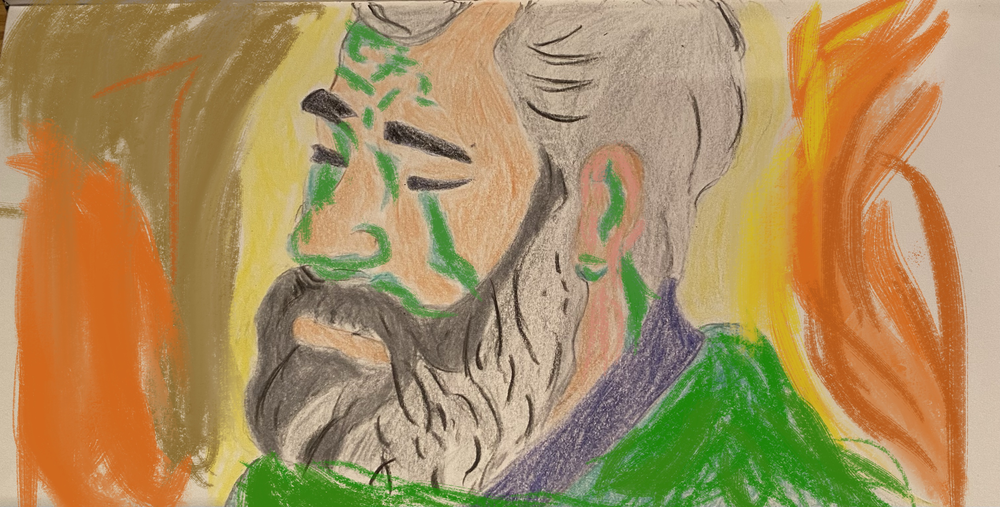

Often we are met with a dilemma when regarding great art, philosophy, science or literature: the authors of these works did things we believe to be morally reprehensible. It is an arduous task to address the matter through moral debate. Searching into the geneology of our moral repugnance by looking back on the history of morality and the debate between moral relativism or moral universalism will not necessarily answer how we can reconciliate an artists actions with their work. There is a different (perhaps arguably oversimplified but nevertheless useful) approach we can take to accomodate the ideas of an individual whose actions or thoughts we fundamentally disagree with. That is, through identifying fallacious reasoning that looks to attack the person and adjust this reasoning so that the content is seperated from the creator. In logic, the type of reasoning used to attack the person rather than what they are saying - in this case a work of art or piece of literature - is known as an 'Ad Hominem' argument.
First impressions are impactful. The amygdala is an area of the brain often popularised as ‘the centre for fear’. Whilst this is vaguely true, it's function is more nuanced. It is more accurate to think of the amygdala as an area of the brain that governs threat detection. In more recent work it has been found that the amygdala is responsible for an array of human emotional experiences. It is also active in a host of different situations, not just those we perceive to be life threatening. These include situations associated with existing friendships and the cultivation of new friendships. This multifunctional aspect of the amygdala is a property for many brain regions. Our brain is an interconnected system and so different regions of our brain will serve multiple functions. In neuroscience, whilst it is helpful to think of brain areas as regional districts that have specific functions, really it is whole networks that communicate in specific neural patterns to bring about an emotion or experience. The areas of the brain should not be thought of in the same way as organs of the body. It is only because the level of complexity in the brain is so great that in order to visualise and understand it, we must compartmentalise it (perhaps you have read in popular neuroscience books or heard in podcasts that the human brain is the most complex known object and this remains true. Think about the magnitude of effort to understand this object, in relation to all the other known complexities in the natural sciences). Our brains also possess the remarkable ability of rewiring. This is due to what neuroscientists term 'neuroplasticity'. This means that in some cases, depending on the individual, a brain region might be encoded for a different task. For example, those that our blind in most cases still possess the brain region largely responsible for vision, namely, the occipital lobe. However, instead of it being used for vision, the neurones in this region are rewired for other sensory stimulation, such as tactile, required for learning braille (a case was documented where a blind woman had a stroke occurring in her occipital lobe. At first this was thought as fortunate as she was blind. However, she could no longer read braille because her neurones and synapses for tactile sensory stimulus had rewired to this region and had subsequently been damaged during the stroke).
Let’s go back to the amygdala. In functional magnetic resonance imaging (fMRI) studies it was found that within a split second of visual perception the amygdala of those under the scan activated in response to an unfamiliar face. In testing for inherent degrees of racial bias, this occurred for faces that had a different skin tone. This was irrespective of a person’s racial beliefs. In the psychology literature, it was found that first impressions have a very strong and surprisingly lasting judgement on how you think a person is. These judgements will also vary considerably depending on the person who makes them. This may sound obvious, but the variation can be truly drastic when you take into account a person’s genetic background, their environment (which goes into the epigenetics of how certain genes are ‘turned on’ in certain environments and not others), upbringing and social peers. Though I do not like using the term subconscious, because such reasoning can never be falsified, it is certainly the case that without our conscious knowledge, we are coming to opinions of people in a matter of seconds that will influence how we think and interact with them. (From an evolutionary perspective it makes sense that we form such quick decisions. When our ancestry was exposed more frequently to hostile environments, survival became who could react the quickest. This meant the development of fast, almost instantaneous threat detection to the unfamiliar*). Being conscious of this influence does not necessarily change these judgements. This is why it is important to invest some humility into our judgement. If the roles were reversed and another individual made a judgement we felt was unfavourable or misplaced, we would feel affronted (this is of course skipping over the argument on whether we should care about the opinions of others - in certain situations it makes sense, in others it does not). It seems the person has made a judgement based on a very small snapshot of our life.
Take myself. I am twenty-three. I have had a whole host of experiences, interests, thoughts, friendships and interactions in the years of my existence which have formed my outlook on life. It would be unfair and equally unjustified to boil my character down to a first impression of a few seconds or minutes. The point is we must have more caution and consideration before we enact on the path of thinking we have a person’s character figured out. It is a matter of theory of mind - knowing that another human with relative experiences of importance is behind the face we see. We must remind ourselves that the self, that ego of ours, interferes with every interaction we take with others, overriding the sense of commonality and camaraderie that we all share when navigating our lives. This can be a hard practice to do. As Jung famously said, "thinking is difficult, that is why people judge". Yet for the majority of those who will read this, the difficulty of the task should be surmounted by the individual interest to understand both the power of judgement and how often it is inadequate as a tool to discern a person’s character. I have been inspired by many books, but no author I feel has done more justice to the subject of misjudging a character than Jane Austen in Pride and Prejudice. As Austen illustrated with Mr. Darcy, we never really know who a person is.
From the very beginning— from the first moment, I may almost say— of my acquaintance with you, your manners, impressing me with the fullest belief of your arrogance, your conceit, and your selfish disdain of the feelings of others, were such as to form the groundwork of disapprobation on which succeeding events have built so immovable a dislike; and I had not known you a month before I felt that you were the last man in the world whom I could ever be prevailed on to marry. - Elizabeth Bennet, Jane Austen, Pride and Prejudice
Elizabeth Bennet of course married Mr. Darcy, as it turned out he was a very decent man who had been misjudged (though perhaps we can now say any first judgement is a misjudgement) and misunderstood. People, in general, conceal so much from us, as we do with others. When put in such terms it seems ludicrous to surmise a person based on fleeting and superficial encounters. As rational agents in the world, to act in accordance with our nature is to think before passing judgement, to know that behind the mask is an individual much akin to ourselves who has suffered, grieved and loved.
*It must be said that the evolutionary argument has received a considerable amount of criticism among philosophers. This is because the reasoning is a ‘Just So’ case. That is, the explanation fits because we reasoned it to fit. It therefore does not necessarily mean that the reason we have a quick, discriminatory threat detection is because of an evolutionary advantage. I think that it likely is for this reason, but appealing to an evolutionary argument is a display of poor and somewhat ill-considered argumentation.
I recently finished reading Nietzsche's 'Ecce Homo' (1888), a unique autobiographical work that is both a reaffirmation and self-celebration of his core ideas: the Eternal Return, the Death of God, the Overman and Amor Fati. It was at times hard not to read this work without a certain level of scepticism and criticism. There are extracts where we find Nietzsche's self-importance and megalomania on full display. Take this statement as one example among many in the book.
I know my fate. One day my name will be associated with the memory of something tremendous - a crisis without equal on earth, the most profound collision of conscience, a decision that was conjured up against everything that had been believed, demanded, hallowed so far. I am no man, I am dynamite. - Friedrich Nietzsche, Ecce Homo
Indeed, Ecce Homo means, 'beyond the man' and in painting, depicts Christ wearing the crown of thorns. Nietzsche, it seems, felt himself to be on equal footing with Jesus Christ (he actually called himself the anti-christ and one of his books is named as such). A bold statement, to put it mildly. Despite these self-aggrandisements, at the core of Nietzsche's philosophy is, paradoxically, a deep humility. Whilst most philosophers attempted to impose a new system of thought on a philosophical problem, be it Kant introducing Transcendental Idealism to recompense for what he felt were the deficits of pure Rationalism and Empiricism, or Frege introducing Sense and Reference to overcome ambiguities in the semantics of a sentence, Nietzsche was anti-systematic. That is, he did not believe a philosophical position held by a philosopher could alone be the ultimate explanation of our reality.
There are two important reasons for this assertion. Firstly, it is too great a task for any one person to create a system of thought that embodies the whole of our world if we do not know and cannot agree on ontology (our being), existence and what the world is and means. Secondly, we do not possess objective truth to create a system of thought which accurately describes the world and its functions. As the philosopher of science Karl Popper said, we do not have the truth in our pocket. This is the reasoning behind the title of this essay (It is a chapter title within Nietzsche's Ecce Homo). His wisdom stemmed from his own willingness to see the limitations of his philosophy and his intellectual powers. It can therefore be argued Nietzsche wrote his autobiography with a sense of irony and self-mocking, as to be wise is to contradict what wisdom actually is, but in recognising the contradiction it elevates the level of thought to a higher plateau of wisdom. (I also believe it is a dig at Socrates, who famously stated, 'I am wise because I know nothing'. To state oneself as wise for knowing nothing is in itself a systematic approach to philosophy).
This is not to be taken as a criticism of systematic thinking. In order to make sense of the world it is necessary to first impose constraints on it. However, there exists a fundamental flaw in creating a system of thought and fanatically adhering to it. When we create a new value system we run the risk of embracing the simple rather than the complex, and this is a dishonest evaluation of what is inevitably an inherently complex subject: that of the structure of the world and the human place in it. For we have only made things simple out of our own rendition of what we think the world is through the implementation of a system. In economics the models we formalise dealing with utility make many assumptions about human behaviour and the world - the economist should not seriously think that these are accurate depictions of human behaviour or the actual economic landscape (though many failures in economic thought have come through adhering too closely to constrained theory. As the economist Joan Robinson said in her book 'Economic Philosophy', economics is inevitably ideological). It is therefore in our duty, as one aiming for intellectual honesty, to know that there are constraints with systematising, to know our belief is likely wrong, that we are placing thoughts on the world, rather than ascertaining what the world actually is.
Consider language. Language is an extremely powerful development in our human existence and some, like Steven Pinker in his book, 'The Language Instinct', argue it is what separates us sapiens from other animals. However, as a tool for explaining the underlying essence of physical phenomena it falls remarkably short. For example, out of agreement between ourselves and societal norms, we say that a particular emotion we experience, which causes us to feel unpleasant, is termed 'anger'. However, it could be that the neurochemicals that engineered the state of 'anger' we experience could be termed something completely different. In this case the experience, the actual neurochemicals and molecules which bring the feeling of anger about, are the same. Yet, the tool by which we describe and name the experience is termed differently (for instance it could be called 'Blixer'). This is the fundamental limit of language. When Wittgenstein stated, "the limits of my language are the limits of my world", he meant it in the literal sense that language is only a tool that works well to describe some aspects of our world but is inadequate in discerning life’s inherent natural qualities. It is as if our fate is inevitably reduced to stabbing in the dark with a semi-sharp tool.
This is not the same as the Linguistic Relativity Hypothesis (also known as the Sapir-Whorf Hypothesis). Ted Chiang's Sci-Fi work 'The Story of Your Life' (made into the film 'Arrival') depicts an alien race who arrived on Earth and their parting gift was offering their unique language to humans. This language had a particular essence and structure that enabled the individual who spoke it to see past, present and future. In other words, in possession of such a language, time became an illusion - every sentence created was already seen, every word said was already heard, every event had been known. This is not what Wittgenstein meant. Rather, whatever language we do speak will be its own limit on how we perceive and understand the world, regardless of the particular qualities of any specific language. The waterfall with its particular properties would be a waterfall even if there was no descriptive language to describe such properties. The fact there does exist such descriptive language does not render the waterfall 'more real'.
When I impose my system of thought on the world, it is in full consciousness that this system is flawed, that I am engaging in mere solipsism. I am being human in that I am constrained.
*in progress
Dan Ariely is a popular behavioural scientist who, among many other things, wrote the book 'Predictably irrational'. This essay was going to be titled, 'Why I Donated My Dan Ariely Books To Charity'.
*in progress
In my essay on first impressions, I mentioned the need to be aware of our initial judgements. That is, how fast these judgements happen and how, ultimately, we must consider a person in much greater depth before coming to conclusions about their character. The same depth of consideration must be applied to works of philosophy, art and literature. This particularly true when, in most cases, we are only exposed to a few fragments of a philosopher's writings or an artist's work.
*in progress
Take the Roaring Twenties. It was a remarkable period. There was the Harlem Renaissance, writers such as Hemingway and Fitzgerald were roaming the Parisian bars and it was the genesis of the Jazz Age.